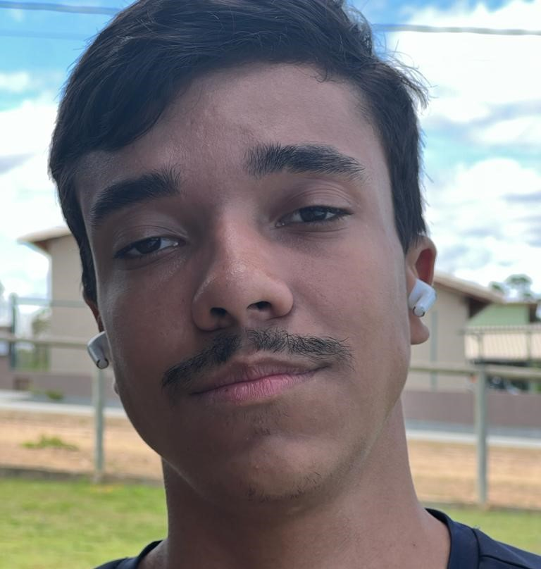

- Home
- >
- Currículo
Currículo
Dados Pessoais

Nome:
Bruno Elias Martins
Data de Nascimento:
25 de Julho de 2002
Residência:
Itajubá / MG - Brasil
Idiomas:
Português (Nativo)
Inglês (Básico)
Sobre Mim
Sempre fui apaixonado pela tecnologia e muito curioso, por conta disso iniciei a graduação no curso de engenharia de computação na Universidade Federal de Itajubá, onde tenho a oportunidade de explorar minha paixão por tecnologia e inovação.
Ao longo do meu curso, tenho mergulhado em um mundo de conhecimento abrangente, adquirindo habilidades sólidas em programação e desenvolvimento de software. Minhas experiências acadêmicas me permitiram dominar linguagens como C, C++, Java e Python, que utilizo para solucionar problemas e criar soluções eficientes..
AMe considero ágil e consistente em aprender uma nova linguagem e me adaptar a qualquer mudança, pronto para superar qualquer desafio!
Educação
2021-Em andamento
Engenharia de Computação / Graduação / Universidade Federal de Itajubá
Habilidades
Soft Skills
Trabalho em equipe / Criatividade / Organização / Proatividade
Contato
bruno2222elias@gmail.com
(31)9 7248-0213
← Voltar ao início